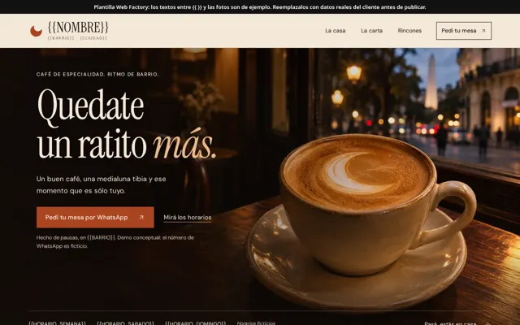
Plantillas Web Factory
11 plantillas reutilizables derivadas de las demos mejoradas con Fable 5.2. Los textos entre {{ }} y las fotos son de ejemplo: reemplazalos con datos reales del cliente.
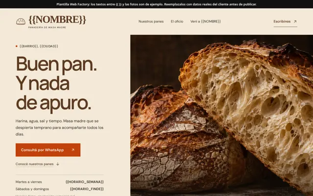
gastro-panaderia
Panadería, pastelería, rotisería, almacén de alimentos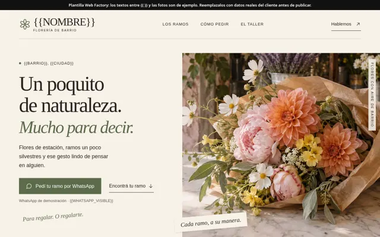
comercio-local
Comercio local / retail de barrio (florería, regalería, bazar, tienda)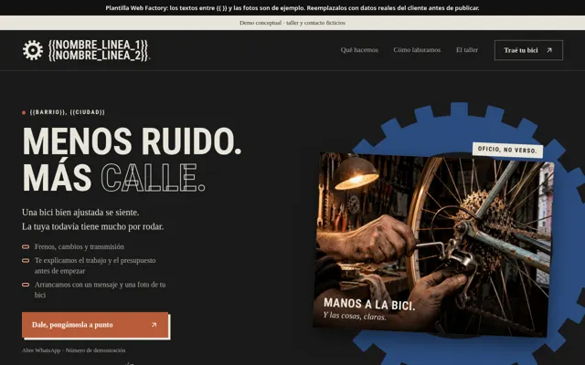
servicios-oficio
Servicios de oficio (taller, service, reparaciones, cerrajería, electricista)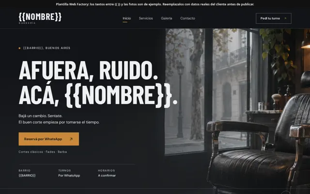
barberia
Barbería / peluquería masculina (multipágina)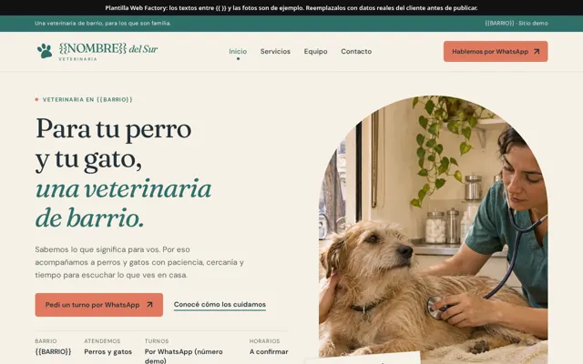
veterinaria
Veterinaria / clínica de mascotas (multipágina)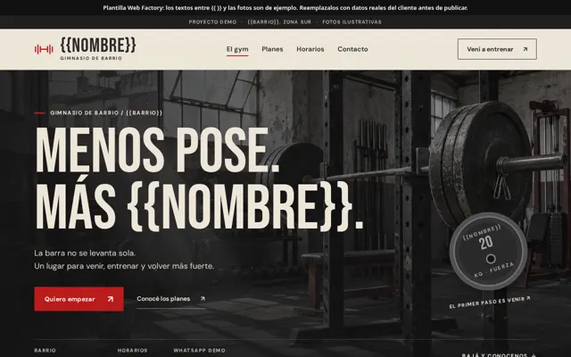
gym-fitness
Gimnasio / estudio fitness (multipágina)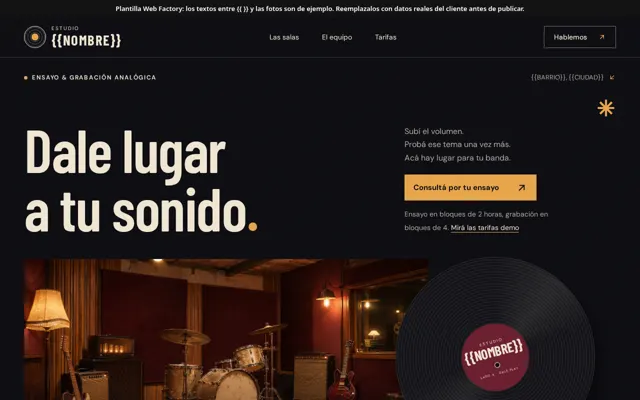
servicios-profesionales
Servicios profesionales con turnos y tarifas (estudio, consultorio, academia)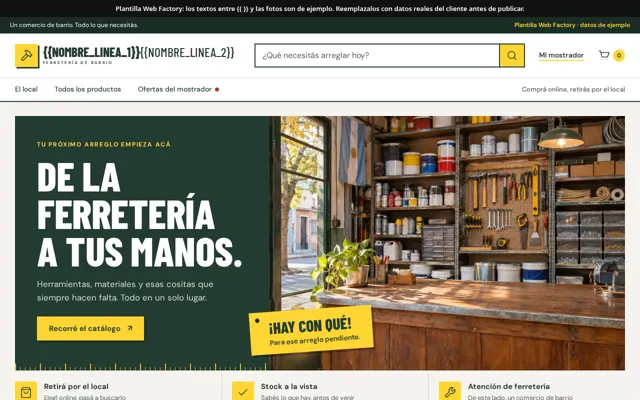
ferreteria
Ferretería / corralón / pinturería con catálogo, stock y carrito de retiro (webapp)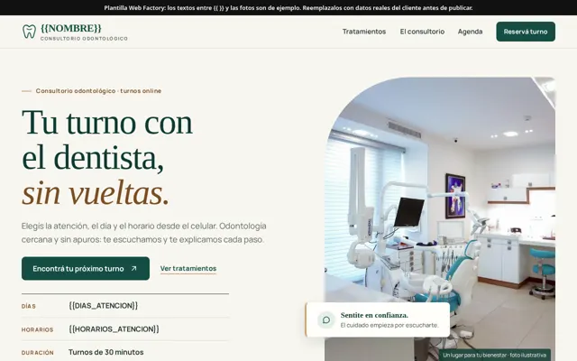
odontologia
Consultorio odontológico / salud con agenda de turnos online (webapp)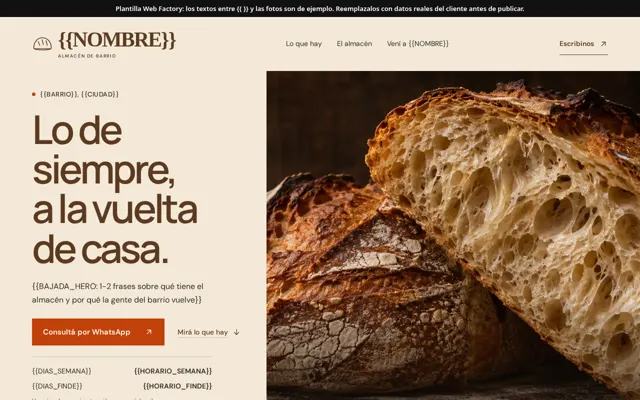